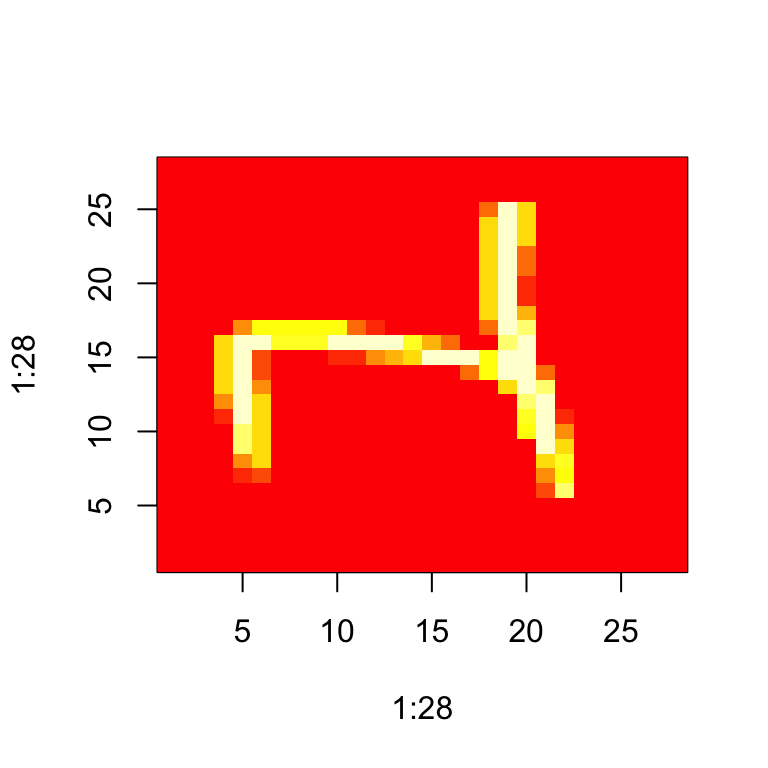
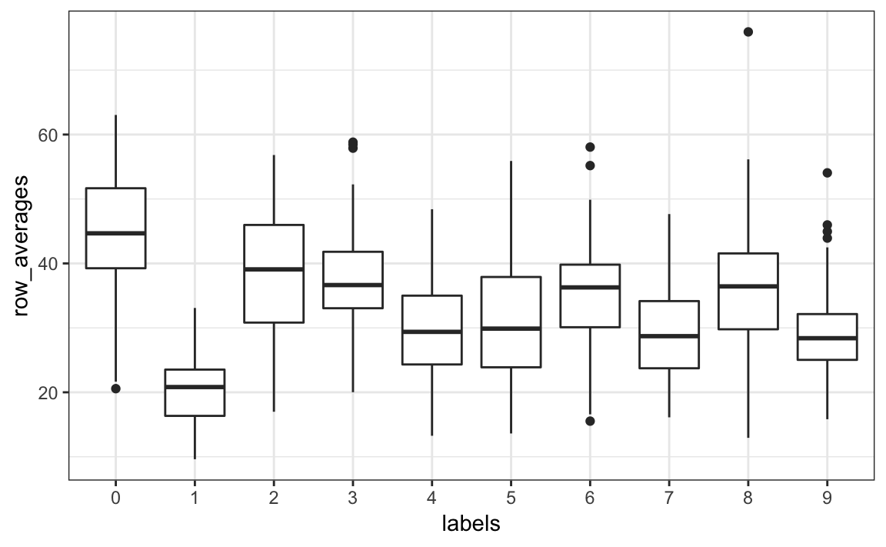
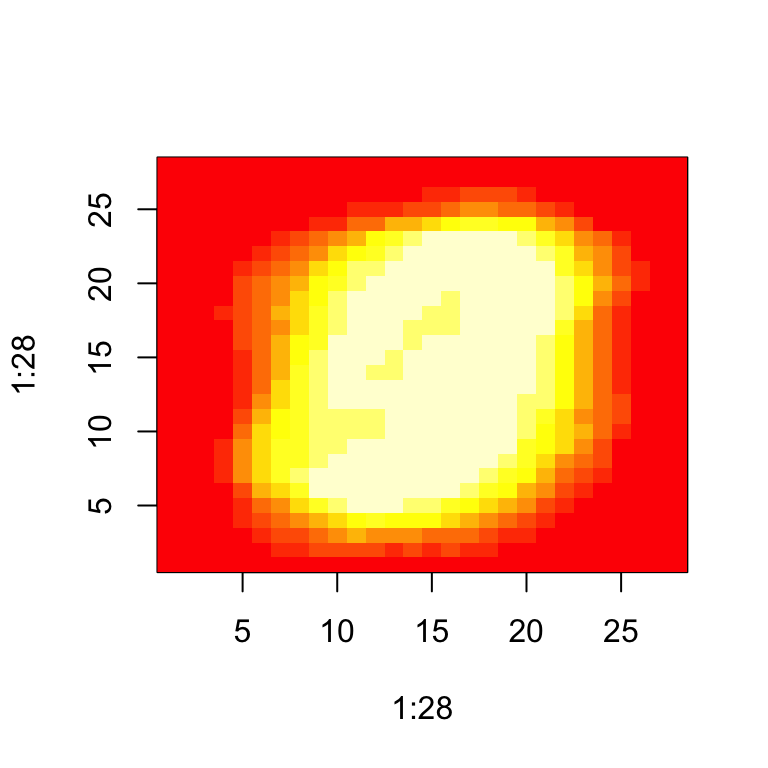
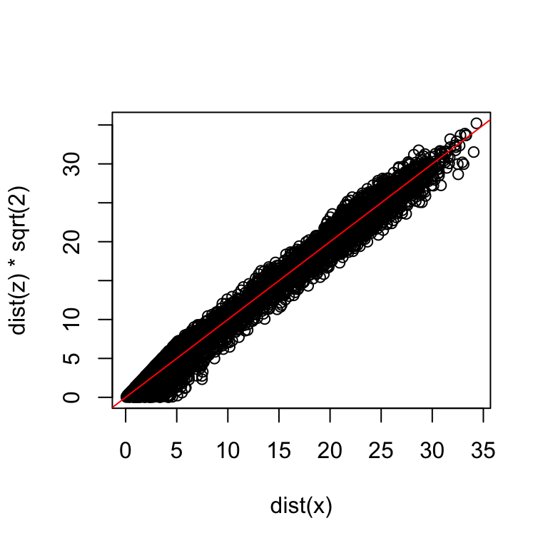
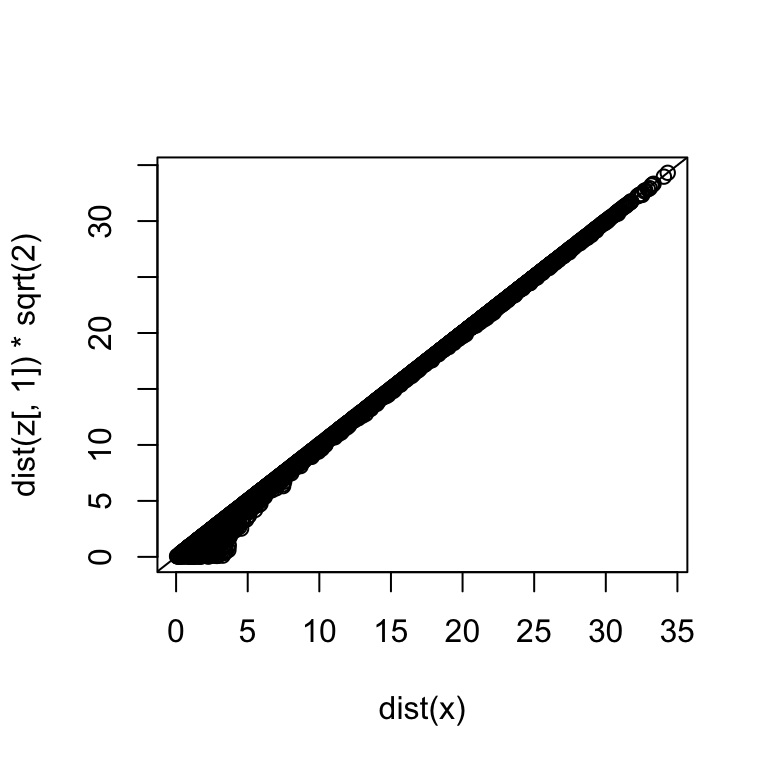
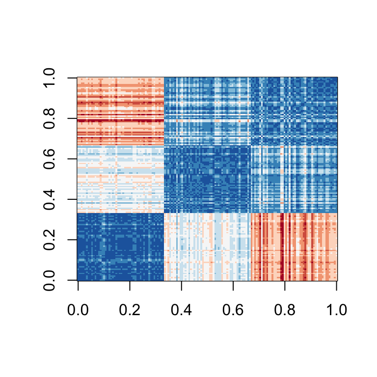

Chapter 34 Large datasets
Machine learning problems often involve datasets that are as large or larger than the MNIST dataset. There is a variety of computational techniques and statistical concepts that are useful for the analysis of large datasets. In this chapter we scratch the surface of these techniques and concepts by describing matrix algebra, dimension reduction, regularization and matrix factorization. We use recommendation systems related to movie ratings as a motivating example.
34.1 Matrix algebra
In machine learning, situations in which all predictors are numeric, or can be converted to numeric in a meaningful way, are common. The digits data set is an example: every pixel records a number between 0 and 255. Let’s load the data:
library(tidyverse)
library(dslabs)
if(!exists("mnist")) mnist <- read_mnist()In these cases, it is often convenient to save the predictors in a matrix and the outcome in a vector rather than using a data frame. You can see that the predictors are saved as a matrix:
class(mnist$train$images)
#> [1] "matrix" "array"This matrix represents 60,000 digits, so for the examples in this chapter, we will take a more manageable subset. We will take the first 1,000 predictors x and labels y:
x <- mnist$train$images[1:1000,]
y <- mnist$train$labels[1:1000]The main reason for using matrices is that certain mathematical operations needed to develop efficient code can be performed using techniques from a branch of mathematics called linear algebra. In fact, linear algebra and matrix notation are key elements of the language used in academic papers describing machine learning techniques. We will not cover linear algebra in detail here, but will demonstrate how to use matrices in R so that you can apply the linear algebra techniques already implemented in base R or other packages.
To motivate the use of matrices, we will pose five questions/challenges:
1. Do some digits require more ink than others? Study the distribution of the total pixel darkness and how it varies by digits.
2. Are some pixels uninformative? Study the variation of each pixel and remove predictors (columns) associated with pixels that don’t change much and thus can’t provide much information for classification.
3. Can we remove smudges? First, look at the distribution of all pixel values. Use this to pick a cutoff to define unwritten space. Then, set anything below that cutoff to 0.
4. Binarize the data. First, look at the distribution of all pixel values. Use this to pick a cutoff to distinguish between writing and no writing. Then, convert all entries into either 1 or 0, respectively.
5. Scale each of the predictors in each entry to have the same average and standard deviation.
To complete these, we will have to perform mathematical operations involving several variables. The tidyverse is not developed to perform these types of mathematical operations. For this task, it is convenient to use matrices.
Before we do this, we will introduce matrix notation and basic R code to define and operate on matrices.
34.1.1 Notation
In matrix algebra, we have three main types of objects: scalars, vectors, and matrices. A scalar is just one number, for example \(a = 1\). To denote scalars in matrix notation, we usually use a lower case letter and do not bold.
Vectors are like the numeric vectors we define in R: they include several scalar entries. For example, the column containing the first pixel:
length(x[,1])
#> [1] 1000has 1,000 entries. In matrix algebra, we use the following notation for a vector representing a feature/predictor:
\[ \begin{pmatrix} x_1\\\ x_2\\\ \vdots\\\ x_N \end{pmatrix} \]
Similarly, we can use math notation to represent different features mathematically by adding an index:
\[ \mathbf{X}_1 = \begin{pmatrix} x_{1,1}\\ \vdots\\ x_{N,1} \end{pmatrix} \mbox{ and } \mathbf{X}_2 = \begin{pmatrix} x_{1,2}\\ \vdots\\ x_{N,2} \end{pmatrix} \]
If we are writing out a column, such as \(\mathbf{X}_1\), in a sentence we often use the notation: \(\mathbf{X}_1 = ( x_{1,1}, \dots x_{N,1})^\top\) with \(^\top\) the transpose operation that converts columns into rows and rows into columns.
A matrix can be defined as a series of vectors of the same size joined together as columns:
x_1 <- 1:5
x_2 <- 6:10
cbind(x_1, x_2)
#> x_1 x_2
#> [1,] 1 6
#> [2,] 2 7
#> [3,] 3 8
#> [4,] 4 9
#> [5,] 5 10Mathematically, we represent them with bold upper case letters:
\[ \mathbf{X} = [ \mathbf{X}_1 \mathbf{X}_2 ] = \begin{pmatrix} x_{1,1}&x_{1,2}\\ \vdots\\ x_{N,1}&x_{N,2} \end{pmatrix} \]
The dimension of a matrix is often an important characteristic needed to assure that certain operations can be performed. The dimension is a two-number summary defined as the number of rows \(\times\) the number of columns. In R, we can extract the dimension of a matrix with the function dim:
dim(x)
#> [1] 1000 784Vectors can be thought of as \(N\times 1\) matrices. However, in R, a vector does not have dimensions:
dim(x_1)
#> NULLYet we explicitly convert a vector into a matrix using the function as.matrix:
dim(as.matrix(x_1))
#> [1] 5 1We can use this notation to denote an arbitrary number of predictors with the following \(N\times p\) matrix, for example, with \(p=784\):
\[ \mathbf{X} = \begin{pmatrix} x_{1,1}&\dots & x_{1,p} \\ x_{2,1}&\dots & x_{2,p} \\ & \vdots & \\ x_{N,1}&\dots & x_{N,p} \end{pmatrix} \]
We stored this matrix in x:
dim(x)
#> [1] 1000 784We will now learn several useful operations related to matrix algebra. We use three of the motivating questions listed above.
34.1.2 Converting a vector to a matrix
It is often useful to convert a vector to a matrix. For example, because the variables are pixels on a grid, we can convert the rows of pixel intensities into a matrix representing this grid.
We can convert a vector into a matrix with the matrix function and specifying the number of rows and columns that the resulting matrix should have. The matrix is filled in by column: the first column is filled first, then the second and so on. This example helps illustrate:
my_vector <- 1:15
mat <- matrix(my_vector, 5, 3)
mat
#> [,1] [,2] [,3]
#> [1,] 1 6 11
#> [2,] 2 7 12
#> [3,] 3 8 13
#> [4,] 4 9 14
#> [5,] 5 10 15We can fill by row by using the byrow argument. So, for example, to transpose the matrix mat, we can use:
mat_t <- matrix(my_vector, 3, 5, byrow = TRUE)
mat_t
#> [,1] [,2] [,3] [,4] [,5]
#> [1,] 1 2 3 4 5
#> [2,] 6 7 8 9 10
#> [3,] 11 12 13 14 15When we turn the columns into rows, we refer to the operations as transposing the matrix. The function t can be used to directly transpose a matrix:
identical(t(mat), mat_t)
#> [1] TRUEWarning: The matrix function recycles values in the vector without warning if the product of columns and rows does not match the length of the vector:
matrix(my_vector, 4, 5)
#> Warning in matrix(my_vector, 4, 5): data length [15] is not a sub-
#> multiple or multiple of the number of rows [4]
#> [,1] [,2] [,3] [,4] [,5]
#> [1,] 1 5 9 13 2
#> [2,] 2 6 10 14 3
#> [3,] 3 7 11 15 4
#> [4,] 4 8 12 1 5To put the pixel intensities of our, say, 3rd entry, which is a 4 into grid, we can use:
grid <- matrix(x[3,], 28, 28)To confirm that in fact we have done this correctly, we can use the function image, which shows an image of its third argument. The top of this plot is pixel 1, which is shown at the bottom so the image is flipped. To code below includes code showing how to flip it back:
image(1:28, 1:28, grid)
image(1:28, 1:28, grid[, 28:1])
34.1.3 Row and column summaries
For the first task, related to total pixel darkness, we want to sum the values of each row and then visualize how these values vary by digit.
The function rowSums takes a matrix as input and computes the desired values:
sums <- rowSums(x)We can also compute the averages with rowMeans if we want the values to remain between 0 and 255:
avg <- rowMeans(x)Once we have this, we can simply generate a boxplot:
tibble(labels = as.factor(y), row_averages = avg) %>%
qplot(labels, row_averages, data = ., geom = "boxplot") 
From this plot we see that, not surprisingly, 1s use less ink than the other digits.
We can compute the column sums and averages using the function colSums and colMeans, respectively.
The matrixStats package adds functions that performs operations on each row or column very efficiently, including the functions rowSds and colSds.
34.1.4 apply
The functions just described are performing an operation similar to what sapply and the purrr function map do: apply the same function to a part of your object. In this case, the function is applied to either each row or each column. The apply function lets you apply any function, not just sum or mean, to a matrix. The first argument is the matrix, the second is the dimension, 1 for rows, 2 for columns, and the third is the function. So, for example, rowMeans can be written as:
avgs <- apply(x, 1, mean)But notice that just like with sapply and map, we can perform any function. So if we wanted the standard deviation for each column, we could write:
sds <- apply(x, 2, sd)The tradeoff for this flexibility is that these operations are not as fast as dedicated functions such as rowMeans.
34.1.5 Filtering columns based on summaries
We now turn to task 2: studying the variation of each pixel and removing columns associated with pixels that don’t change much and thus do not inform the classification. Although a simplistic approach, we will quantify the variation of each pixel with its standard deviation across all entries. Since each column represents a pixel, we use the colSds function from the matrixStats package:
library(matrixStats)
sds <- colSds(x)A quick look at the distribution of these values shows that some pixels have very low entry to entry variability:
qplot(sds, bins = "30", color = I("black"))
This makes sense since we don’t write in some parts of the box. Here is the variance plotted by location:
image(1:28, 1:28, matrix(sds, 28, 28)[, 28:1])
We see that there is little variation in the corners.
We could remove features that have no variation since these can’t help us predict. In Section 2.4.7, we described the operations used to extract columns:
x[ ,c(351,352)]and rows:
x[c(2,3),]We can also use logical indexes to determine which columns or rows to keep. So if we wanted to remove uninformative predictors from our matrix, we could write this one line of code:
new_x <- x[ ,colSds(x) > 60]
dim(new_x)
#> [1] 1000 314Only the columns for which the standard deviation is above 60 are kept, which removes over half the predictors.
Here we add an important warning related to subsetting matrices: if you select one column or one row, the result is no longer a matrix but a vector.
class(x[,1])
#> [1] "integer"
dim(x[1,])
#> NULLHowever, we can preserve the matrix class by using the argument drop=FALSE:
class(x[ , 1, drop=FALSE])
#> [1] "matrix" "array"
dim(x[, 1, drop=FALSE])
#> [1] 1000 134.1.6 Indexing with matrices
We can quickly make a histogram of all the values in our dataset. We saw how we can turn vectors into matrices. We can also undo this and turn matrices into vectors. The operation will happen by row:
mat <- matrix(1:15, 5, 3)
as.vector(mat)
#> [1] 1 2 3 4 5 6 7 8 9 10 11 12 13 14 15To see a histogram of all our predictor data, we can use:
qplot(as.vector(x), bins = 30, color = I("black"))
We notice a clear dichotomy which is explained as parts of the image with ink and parts without. If we think that values below, say, 50 are smudges, we can quickly make them zero using:
new_x <- x
new_x[new_x < 50] <- 0To see what this does, we look at a smaller matrix:
mat <- matrix(1:15, 5, 3)
mat[mat < 3] <- 0
mat
#> [,1] [,2] [,3]
#> [1,] 0 6 11
#> [2,] 0 7 12
#> [3,] 3 8 13
#> [4,] 4 9 14
#> [5,] 5 10 15We can also use logical operations with matrix logical:
mat <- matrix(1:15, 5, 3)
mat[mat > 6 & mat < 12] <- 0
mat
#> [,1] [,2] [,3]
#> [1,] 1 6 0
#> [2,] 2 0 12
#> [3,] 3 0 13
#> [4,] 4 0 14
#> [5,] 5 0 1534.1.7 Binarizing the data
The histogram above seems to suggest that this data is mostly binary. A pixel either has ink or does not. Using what we have learned, we can binarize the data using just matrix operations:
bin_x <- x
bin_x[bin_x < 255/2] <- 0
bin_x[bin_x > 255/2] <- 1We can also convert to a matrix of logicals and then coerce to numbers like this:
bin_X <- (x > 255/2)*134.1.8 Vectorization for matrices
In R, if we subtract a vector from a matrix, the first element of the vector is subtracted from the first row, the second element from the second row, and so on. Using mathematical notation, we would write it as follows:
\[ \begin{pmatrix} X_{1,1}&\dots & X_{1,p} \\ X_{2,1}&\dots & X_{2,p} \\ & \vdots & \\ X_{N,1}&\dots & X_{N,p} \end{pmatrix} - \begin{pmatrix} a_1\\\ a_2\\\ \vdots\\\ a_N \end{pmatrix} = \begin{pmatrix} X_{1,1}-a_1&\dots & X_{1,p} -a_1\\ X_{2,1}-a_2&\dots & X_{2,p} -a_2\\ & \vdots & \\ X_{N,1}-a_n&\dots & X_{N,p} -a_n \end{pmatrix} \]
The same holds true for other arithmetic operations. This implies that we can scale each row of a matrix like this:
(x - rowMeans(x)) / rowSds(x)If you want to scale each column, be careful since this approach does not work for columns. To perform a similar operation, we convert the columns to rows using the transpose t, proceed as above, and then transpose back:
t(t(X) - colMeans(X))We can also use a function called sweep that works similarly to apply. It takes each entry of a vector and subtracts it from the corresponding row or column.
X_mean_0 <- sweep(x, 2, colMeans(x))The function sweep actually has another argument that lets you define the arithmetic operation. So to divide by the standard deviation, we do the following:
x_mean_0 <- sweep(x, 2, colMeans(x))
x_standardized <- sweep(x_mean_0, 2, colSds(x), FUN = "/")34.1.9 Matrix algebra operations
Finally, although we do not cover matrix algebra operations such as matrix multiplication, we share here the relevant commands for those that know the mathematics and want to learn the code:
1. Matrix multiplication is done with %*%. For example, the cross product is:
t(x) %*% x2. We can compute the cross product directly with the function:
crossprod(x)3. To compute the inverse of a function, we use solve. Here it is applied to the cross product:
solve(crossprod(x))4. The QR decomposition is readily available by using the qr function:
qr(x)34.2 Exercises
1. Create a 100 by 10 matrix of randomly generated normal numbers. Put the result in x.
2. Apply the three R functions that give you the dimension of x, the number of rows of x, and the number of columns of x, respectively.
3. Add the scalar 1 to row 1, the scalar 2 to row 2, and so on, to the matrix x.
4. Add the scalar 1 to column 1, the scalar 2 to column 2, and so on, to the matrix x. Hint: use sweep with FUN = "+".
5. Compute the average of each row of x.
6. Compute the average of each column of x.
7. For each digit in the MNIST training data, compute the proportion of pixels that are in a grey area, defined as values between 50 and 205.
Make boxplot by digit class. Hint: use logical operators and rowMeans.
34.3 Distance
Many of the analyses we perform with high-dimensional data relate directly or indirectly to distance. Most clustering and machine learning techniques rely on being able to define distance between observations, using features or predictors.
34.3.1 Euclidean distance
As a review, let’s define the distance between two points, \(A\) and \(B\), on a Cartesian plane.

The Euclidean distance between \(A\) and \(B\) is simply:
\[ \mbox{dist}(A,B) = \sqrt{ (A_x-B_x)^2 + (A_y-B_y)^2} \]
This definition applies to the case of one dimension, in which the distance between two numbers is simply the absolute value of their difference. So if our two one-dimensional numbers are \(A\) and \(B\), the distance is:
\[ \mbox{dist}(A,B) = \sqrt{ (A - B)^2 } = | A - B | \]
34.3.2 Distance in higher dimensions
Earlier we introduced a training dataset with feature matrix measurements for 784 features. For illustrative purposes, we will look at a random sample of 2s and 7s.
library(tidyverse)
library(dslabs)
if(!exists("mnist")) mnist <- read_mnist()
set.seed(1995)
ind <- which(mnist$train$labels %in% c(2,7)) %>% sample(500)
x <- mnist$train$images[ind,]
y <- mnist$train$labels[ind]The predictors are in x and the labels in y.
For the purposes of, for example, smoothing, we are interested in describing distance between observation; in this case, digits. Later, for the purposes of selecting features, we might also be interested in finding pixels that behave similarly across samples.
To define distance, we need to know what points are since mathematical distance is computed between points. With high dimensional data, points are no longer on the Cartesian plane. Instead, points are in higher dimensions. We can no longer visualize them and need to think abstractly. For example, predictors \(\mathbf{X}_i\) are defined as a point in 784 dimensional space: \(\mathbf{X}_i = (x_{i,1},\dots,x_{i,784})^\top\).
Once we define points this way, the Euclidean distance is defined very similarly as it was for two dimensions. For example, the distance between the predictors for two observations, say observations \(i=1\) and \(i=2\), is:
\[ \mbox{dist}(1,2) = \sqrt{ \sum_{j=1}^{784} (x_{1,j}-x_{2,j })^2 } \]
This is just one non-negative number, just as it is for two dimensions.
34.3.3 Euclidean distance example
The labels for the first three observations are:
y[1:3]
#> [1] 7 2 7The vectors of predictors for each of these observations are:
x_1 <- x[1,]
x_2 <- x[2,]
x_3 <- x[3,]The first and third numbers are sevens and the second one is a two. We expect the distances between the same number:
sqrt(sum((x_1 - x_2)^2))
#> [1] 3273to be smaller than between different numbers:
sqrt(sum((x_1 - x_3)^2))
#> [1] 2311
sqrt(sum((x_2 - x_3)^2))
#> [1] 2636As expected, the 7s are closer to each other.
A faster way to compute this is using matrix algebra:
sqrt(crossprod(x_1 - x_2))
#> [,1]
#> [1,] 3273
sqrt(crossprod(x_1 - x_3))
#> [,1]
#> [1,] 2311
sqrt(crossprod(x_2 - x_3))
#> [,1]
#> [1,] 2636We can also compute all the distances at once relatively quickly using the function dist, which computes the distance between each row and produces an object of class dist:
d <- dist(x)
class(d)
#> [1] "dist"There are several machine learning related functions in R that take objects of class dist as input. To access the entries using row and column indices, we need to coerce it into a matrix. We can see the distance we calculated above like this:
as.matrix(d)[1:3,1:3]
#> 1 2 3
#> 1 0 3273 2311
#> 2 3273 0 2636
#> 3 2311 2636 0We can quickly see an image of these distances using this code:
image(as.matrix(d))If we order this distance by the labels, we can see that, in general, the twos are closer to each other and the sevens are closer to each other:
image(as.matrix(d)[order(y), order(y)])
One thing we notice here is that there appears to be more uniformity in how the sevens are drawn, since they appear to be closer (more red) to other sevens than twos are to other twos.
34.3.4 Predictor space
Predictor space is a concept that is often used to describe machine learning algorithms. The term space refers to a mathematical definition that we don’t describe in detail here. Instead, we provide a simplified explanation to help understand the term predictor space when used in the context of machine learning algorithms.
The predictor space can be thought of as the collection of all possible vectors of predictors that should be considered for the machine learning challenge in question. Each member of the space is referred to as a point. For example, in the 2 or 7 dataset, the predictor space consists of all pairs \((x_1, x_2)\) such that both \(x_1\) and \(x_2\) are within 0 and 1. This particular space can be represented graphically as a square. In the MNIST dataset the predictor space consists of all 784-th dimensional vectors with each vector element an integer between 0 and 256. An essential element of a predictor space is that we need to define a function that provides the distance between any two points. In most cases we use Euclidean distance, but there are other possibilities. A particular case in which we can’t simply use Euclidean distance is when we have categorical predictors.
Defining a predictor space is useful in machine learning because we do things like define neighborhoods of points, as required by many smoothing techniques. For example, we can define a neighborhood as all the points that are within 2 units away from a predefined center. If the points are two-dimensional and we use Euclidean distance, this neighborhood is graphically represented as a circle with radius 2. In three dimensions the neighborhood is a sphere. We will soon learn about algorithms that partition the space into non-overlapping regions and then make different predictions for each region using the data in the region.
34.3.5 Distance between predictors
We can also compute distances between predictors. If \(N\) is the number of observations, the distance between two predictors, say 1 and 2, is:
\[ \mbox{dist}(1,2) = \sqrt{ \sum_{i=1}^{N} (x_{i,1}-x_{i,2})^2 } \]
To compute the distance between all pairs of the 784 predictors, we can transpose the matrix first and then use dist:
d <- dist(t(x))
dim(as.matrix(d))
#> [1] 784 78434.4 Exercises
1. Load the following dataset:
data("tissue_gene_expression")This dataset includes a matrix x
dim(tissue_gene_expression$x)with the gene expression measured on 500 genes for 189 biological samples representing seven different tissues. The tissue type is stored in y
table(tissue_gene_expression$y)Compute the distance between each observation and store it in an object d.
2. Compare the distance between the first two observations (both cerebellums), the 39th and 40th (both colons), and the 73rd and 74th (both endometriums). See if the observations of the same tissue type are closer to each other.
3. We see that indeed observations of the same tissue type are closer to each other in the six tissue examples we just examined. Make a plot of all the distances using the image function to see if this pattern is general. Hint: convert d to a matrix first.
34.5 Dimension reduction
A typical machine learning challenge will include a large number of predictors, which makes visualization somewhat challenging. We have shown methods for visualizing univariate and paired data, but plots that reveal relationships between many variables are more complicated in higher dimensions. For example, to compare each of the 784 features in our predicting digits example, we would have to create, for example, 306,936 scatterplots. Creating one single scatter-plot of the data is impossible due to the high dimensionality.
Here we describe powerful techniques useful for exploratory data analysis, among other things, generally referred to as dimension reduction. The general idea is to reduce the dimension of the dataset while preserving important characteristics, such as the distance between features or observations. With fewer dimensions, visualization then becomes more feasible. The technique behind it all, the singular value decomposition, is also useful in other contexts. Principal component analysis (PCA) is the approach we will be showing. Before applying PCA to high-dimensional datasets, we will motivate the ideas behind with a simple example.
34.5.1 Preserving distance
We consider an example with twin heights. Some pairs are adults, the others are children. Here we simulate 100 two-dimensional points that represent the number of standard deviations each individual is from the mean height. Each point is a pair of twins. We use the mvrnorm function from the MASS package to simulate bivariate normal data.
set.seed(1988)
library(MASS)
n <- 100
Sigma <- matrix(c(9, 9 * 0.9, 9 * 0.92, 9 * 1), 2, 2)
x <- rbind(mvrnorm(n / 2, c(69, 69), Sigma),
mvrnorm(n / 2, c(55, 55), Sigma))A scatterplot quickly reveals that the correlation is high and that there are two groups of twins, the adults (upper right points) and the children (lower left points):
Our features are \(N\) two-dimensional points, the two heights, and, for illustrative purposes, we will act as if visualizing two dimensions is too challenging. We therefore want to reduce the dimensions from two to one, but still be able to understand important characteristics of the data, for example that the observations cluster into two groups: adults and children.
Let’s consider a specific challenge: we want a one-dimensional summary of our predictors from which we can approximate the distance between any two observations. In the figure above we show the distance between observation 1 and 2 (blue), and observation 1 and 51 (red). Note that the blue line is shorter, which implies 1 and 2 are closer.
We can compute these distances using dist:
d <- dist(x)
as.matrix(d)[1, 2]
#> [1] 1.98
as.matrix(d)[2, 51]
#> [1] 18.7This distance is based on two dimensions and we need a distance approximation based on just one.
Let’s start with the naive approach of simply removing one of the two dimensions. Let’s compare the actual distances to the distance computed with just the first dimension:
z <- x[,1]Here are the approximate distances versus the original distances:
The plot looks about the same if we use the second dimension. We obtain a general underestimation. This is to be expected because we are adding more positive quantities in the distance calculation as we increase the number of dimensions. If instead we use an average, like this
\[\sqrt{ \frac{1}{2} \sum_{j=1}^2 (X_{1,j}-X_{2,j})^2 },\]
then the underestimation goes away. We divide the distance by \(\sqrt{2}\) to achieve the correction.

This actually works pretty well and we get a typical difference of:
sd(dist(x) - dist(z)*sqrt(2))
#> [1] 1.21Now, can we pick a one-dimensional summary that makes this approximation even better?
If we look back at the previous scatterplot and visualize a line between any pair of points, the length of this line is the distance between the two points. These lines tend to go along the direction of the diagonal. Notice that if we instead plot the difference versus the average:
z <- cbind((x[,2] + x[,1])/2, x[,2] - x[,1])we can see how the distance between points is mostly explained by the first dimension: the average.
This means that we can ignore the second dimension and not lose too much information. If the line is completely flat, we lose no information at all. Using the first dimension of this transformed matrix we obtain an even better approximation:

with the typical difference improved by about 35%:
sd(dist(x) - dist(z[,1])*sqrt(2))
#> [1] 0.315Later we learn that z[,1] is the first principal component of the matrix x.
34.5.2 Linear transformations (advanced)
Note that each row of \(X\) was transformed using a linear transformation. For any row \(i\), the first entry was:
\[Z_{i,1} = a_{1,1} X_{i,1} + a_{2,1} X_{i,2}\]
with \(a_{1,1} = 0.5\) and \(a_{2,1} = 0.5\).
The second entry was also a linear transformation:
\[Z_{i,2} = a_{1,2} X_{i,1} + a_{2,2} X_{i,2}\]
with \(a_{1,2} = 1\) and \(a_{2,2} = -1\).
We can also use linear transformation to get \(X\) back from \(Z\):
\[X_{i,1} = b_{1,1} Z_{i,1} + b_{2,1} Z_{i,2}\]
with \(b_{1,2} = 1\) and \(b_{2,1} = 0.5\) and
\[X_{i,2} = b_{2,1} Z_{i,1} + b_{2,2} Z_{i,2}\]
with \(b_{2,1} = 1\) and \(a_{1,2} = -0.5\).
If you are familiar with linear algebra, we can write the operation we just performed like this:
\[ Z = X A \mbox{ with } A = \, \begin{pmatrix} 1/2&1\\ 1/2&-1\\ \end{pmatrix}. \]
And that we can transform back by simply multiplying by \(A^{-1}\) as follows:
\[ X = Z A^{-1} \mbox{ with } A^{-1} = \, \begin{pmatrix} 1&1\\ 1/2&-1/2\\ \end{pmatrix}. \]
Dimension reduction can often be described as applying a transformation \(A\) to a matrix \(X\) with many columns that moves the information contained in \(X\) to the first few columns of \(Z=AX\), then keeping just these few informative columns, thus reducing the dimension of the vectors contained in the rows.
34.5.3 Orthogonal transformations (advanced)
Note that we divided the above by \(\sqrt{2}\) to account for the differences in dimensions when comparing a 2 dimension distance to a 1 dimension distance. We can actually guarantee that the distance scales remain the same if we re-scale the columns of \(A\) to assure that the sum of squares is 1
\[a_{1,1}^2 + a_{2,1}^2 = 1\mbox{ and } a_{1,2}^2 + a_{2,2}^2=1,\]
and that the correlation of the columns is 0:
\[ a_{1,1} a_{1,2} + a_{2,1} a_{2,2} = 0. \]
Remember that if the columns are centered to have average 0, then the sum of squares is equivalent to the variance or standard deviation squared.
In our example, to achieve orthogonality, we multiply the first set of coefficients (first column of \(A\)) by \(\sqrt{2}\) and the second by \(1/\sqrt{2}\), then we get the same exact distance if we use both dimensions:
z[,1] <- (x[,1] + x[,2]) / sqrt(2)
z[,2] <- (x[,2] - x[,1]) / sqrt(2)This gives us a transformation that preserves the distance between any two points:
max(dist(z) - dist(x))
#> [1] 3.24e-14and an improved approximation if we use just the first dimension:
sd(dist(x) - dist(z[,1]))
#> [1] 0.315In this case \(Z\) is called an orthogonal rotation of \(X\): it preserves the distances between rows.
Note that by using the transformation above we can summarize the distance between any two pairs of twins with just one dimension. For example, one-dimensional data exploration of the first dimension of \(Z\) clearly shows that there are two groups, adults and children:
library(tidyverse)
qplot(z[,1], bins = 20, color = I("black"))We successfully reduced the number of dimensions from two to one with very little loss of information.
The reason we were able to do this is because the columns of \(X\) were very correlated:
cor(x[,1], x[,2])
#> [1] 0.988and the transformation produced uncorrelated columns with “independent†information in each column:
cor(z[,1], z[,2])
#> [1] 0.0876One way this insight may be useful in a machine learning application is that we can reduce the complexity of a model by using just \(Z_1\) rather than both \(X_1\) and \(X_2\).
It is actually common to obtain data with several highly correlated predictors. In these cases PCA, which we describe next, can be quite useful for reducing the complexity of the model being fit.
34.5.4 Principal component analysis
In the computation above, the total variability in our data can be defined as the sum of the sum of squares of the columns. We assume the columns are centered, so this sum is equivalent to the sum of the variances of each column:
\[ v_1 + v_2, \mbox{ with } v_1 = \frac{1}{N}\sum_{i=1}^N X_{i,1}^2 \mbox{ and } v_2 = \frac{1}{N}\sum_{i=1}^N X_{i,2}^2 \]
We can compute \(v_1\) and \(v_2\) using:
colMeans(x^2)
#> [1] 3904 3902and we can show mathematically that if we apply an orthogonal transformation as above, then the total variation remains the same:
sum(colMeans(x^2))
#> [1] 7806
sum(colMeans(z^2))
#> [1] 7806However, while the variability in the two columns of X is about the same, in the transformed version \(Z\) 99% of the variability is included in just the first dimension:
v <- colMeans(z^2)
v/sum(v)
#> [1] 1.00e+00 9.93e-05The first principal component (PC) of a matrix \(X\) is the linear orthogonal transformation of \(X\) that maximizes this variability. The function prcomp provides this info:
pca <- prcomp(x)
pca$rotation
#> PC1 PC2
#> [1,] -0.702 0.712
#> [2,] -0.712 -0.702Note that the first PC is almost the same as that provided by the \((X_1 + X_2) / \sqrt{2}\) we used earlier (except perhaps for a sign change that is arbitrary).
The function PCA returns both the rotation needed to transform \(X\) so that the variability of the columns is decreasing from most variable to least (accessed with $rotation) as well as the resulting new matrix (accessed with $x). By default the columns of \(X\) are first centered.
So, using the matrix multiplication shown above, we have that the following are the same (demonstrated by a difference between elements of essentially zero):
a <- sweep(x, 2, colMeans(x))
b <- pca$x %*% t(pca$rotation)
max(abs(a - b))
#> [1] 3.55e-15The rotation is orthogonal which means that the inverse is its transpose. So we also have that these two are identical:
a <- sweep(x, 2, colMeans(x)) %*% pca$rotation
b <- pca$x
max(abs(a - b))
#> [1] 0We can visualize these to see how the first component summarizes the data. In the plot below red represents high values and blue negative values (later, in Section 34.11.1, we learn why we call these weights and patterns):

It turns out that we can find this linear transformation not just for two dimensions but for matrices of any dimension \(p\).
For a multidimensional matrix with \(X\) with \(p\) columns, we can find a transformation that creates \(Z\) that preserves distance between rows, but with the variance of the columns in decreasing order. The second column is the second principal component, the third column is the third principal component, and so on. As in our example, if after a certain number of columns, say \(k\), the variances of the columns of \(Z_j\), \(j>k\) are very small, it means these dimensions have little to contribute to the distance and we can approximate distance between any two points with just \(k\) dimensions. If \(k\) is much smaller than \(p\), then we can achieve a very efficient summary of our data.
34.5.5 Iris example
The iris data is a widely used example in data analysis courses. It includes four botanical measurements related to three flower species:
names(iris)
#> [1] "Sepal.Length" "Sepal.Width" "Petal.Length" "Petal.Width"
#> [5] "Species"If you print iris$Species you will see that the data is ordered by the species.
Let’s compute the distance between each observation. You can clearly see the three species with one species very different from the other two:
x <- iris[,1:4] %>% as.matrix()
d <- dist(x)
image(as.matrix(d), col = rev(RColorBrewer::brewer.pal(9, "RdBu")))
Our predictors here have four dimensions, but three are very correlated:
cor(x)
#> Sepal.Length Sepal.Width Petal.Length Petal.Width
#> Sepal.Length 1.000 -0.118 0.872 0.818
#> Sepal.Width -0.118 1.000 -0.428 -0.366
#> Petal.Length 0.872 -0.428 1.000 0.963
#> Petal.Width 0.818 -0.366 0.963 1.000If we apply PCA, we should be able to approximate this distance with just two dimensions, compressing the highly correlated dimensions. Using the summary function we can see the variability explained by each PC:
pca <- prcomp(x)
summary(pca)
#> Importance of components:
#> PC1 PC2 PC3 PC4
#> Standard deviation 2.056 0.4926 0.2797 0.15439
#> Proportion of Variance 0.925 0.0531 0.0171 0.00521
#> Cumulative Proportion 0.925 0.9777 0.9948 1.00000The first two dimensions account for 97% of the variability. Thus we should be able to approximate the distance very well with two dimensions. We can visualize the results of PCA:

And see that the first pattern is sepal length, petal length, and petal width (red) in one direction and sepal width (blue) in the other. The second pattern is the sepal length and petal width in one direction (blue) and petal length and petal width in the other (red). You can see from the weights that the first PC1 drives most of the variability and it clearly separates the first third of samples (setosa) from the second two thirds (versicolor and virginica). If you look at the second column of the weights, you notice that it somewhat separates versicolor (red) from virginica (blue).
We can see this better by plotting the first two PCs with color representing the species:
data.frame(pca$x[,1:2], Species=iris$Species) %>%
ggplot(aes(PC1,PC2, fill = Species))+
geom_point(cex=3, pch=21) +
coord_fixed(ratio = 1)
We see that the first two dimensions preserve the distance:
d_approx <- dist(pca$x[, 1:2])
qplot(d, d_approx) + geom_abline(color="red")
This example is more realistic than the first artificial example we used, since we showed how we can visualize the data using two dimensions when the data was four-dimensional.
34.5.6 MNIST example
The written digits example has 784 features. Is there any room for data reduction? Can we create simple machine learning algorithms using fewer features?
Let’s load the data:
library(dslabs)
if(!exists("mnist")) mnist <- read_mnist()Because the pixels are so small, we expect pixels close to each other on the grid to be correlated, meaning that dimension reduction should be possible.
Let’s try PCA and explore the variance of the PCs. This will take a few seconds as it is a rather large matrix.
col_means <- colMeans(mnist$test$images)
pca <- prcomp(mnist$train$images)pc <- 1:ncol(mnist$test$images)
qplot(pc, pca$sdev)
We can see that the first few PCs already explain a large percent of the variability:
summary(pca)$importance[,1:5]
#> PC1 PC2 PC3 PC4 PC5
#> Standard deviation 576.823 493.238 459.8993 429.8562 408.5668
#> Proportion of Variance 0.097 0.071 0.0617 0.0539 0.0487
#> Cumulative Proportion 0.097 0.168 0.2297 0.2836 0.3323And just by looking at the first two PCs we see information about the class. Here is a random sample of 2,000 digits:
data.frame(PC1 = pca$x[,1], PC2 = pca$x[,2],
label=factor(mnist$train$label)) %>%
sample_n(2000) %>%
ggplot(aes(PC1, PC2, fill=label))+
geom_point(cex=3, pch=21)
We can also see the linear combinations on the grid to get an idea of what is getting weighted:

The lower variance PCs appear related to unimportant variability in the corners:

Now let’s apply the transformation we learned with the training data to the test data, reduce the dimension and run knn on just a small number of dimensions.
We try 36 dimensions since this explains about 80% of the data. First fit the model:
library(caret)
k <- 36
x_train <- pca$x[,1:k]
y <- factor(mnist$train$labels)
fit <- knn3(x_train, y)Now transform the test set:
x_test <- sweep(mnist$test$images, 2, col_means) %*% pca$rotation
x_test <- x_test[,1:k]And we are ready to predict and see how we do:
y_hat <- predict(fit, x_test, type = "class")
confusionMatrix(y_hat, factor(mnist$test$labels))$overall["Accuracy"]
#> Accuracy
#> 0.975With just 36 dimensions we get an accuracy well above 0.95.
34.6 Exercises
1. We want to explore the tissue_gene_expression predictors by plotting them.
data("tissue_gene_expression")
dim(tissue_gene_expression$x)We want to get an idea of which observations are close to each other, but the predictors are 500-dimensional so plotting is difficult. Plot the first two principal components with color representing tissue type.
2. The predictors for each observation are measured on the same measurement device (a gene expression microarray) after an experimental procedure. A different device and procedure is used for each observation. This may introduce biases that affect all predictors for each observation in the same way. To explore the effect of this potential bias, for each observation, compute the average across all predictors and then plot this against the first PC with color representing tissue. Report the correlation.
3. We see an association with the first PC and the observation averages. Redo the PCA but only after removing the center.
4. For the first 10 PCs, make a boxplot showing the values for each tissue.
5. Plot the percent variance explained by PC number. Hint: use the summary function.
34.7 Recommendation systems
Recommendation systems use ratings that users have given items to make specific recommendations. Companies that sell many products to many customers and permit these customers to rate their products, like Amazon, are able to collect massive datasets that can be used to predict what rating a particular user will give a specific item. Items for which a high rating is predicted for a given user are then recommended to that user.
Netflix uses a recommendation system to predict how many stars a user will give a specific movie. One star suggests it is not a good movie, whereas five stars suggests it is an excellent movie. Here, we provide the basics of how these recommendations are made, motivated by some of the approaches taken by the winners of the Netflix challenges.
In October 2006, Netflix offered a challenge to the data science community: improve our recommendation algorithm by 10% and win a million dollars. In September 2009, the winners were announced112. You can read a good summary of how the winning algorithm was put together here: http://blog.echen.me/2011/10/24/winning-the-netflix-prize-a-summary/ and a more detailed explanation here: http://www.netflixprize.com/assets/GrandPrize2009_BPC_BellKor.pdf. We will now show you some of the data analysis strategies used by the winning team.
34.7.1 Movielens data
The Netflix data is not publicly available, but the GroupLens research lab113 generated their own database with over 20 million ratings for over 27,000 movies by more than 138,000 users. We make a small subset of this data available via the dslabs package:
library(tidyverse)
library(dslabs)
data("movielens")We can see this table is in tidy format with thousands of rows:
movielens %>% as_tibble()
#> # A tibble: 100,004 × 7
#> movieId title year genres userId rating timestamp
#> <int> <chr> <int> <fct> <int> <dbl> <int>
#> 1 31 Dangerous Minds 1995 Drama 1 2.5 1.26e9
#> 2 1029 Dumbo 1941 Anima… 1 3 1.26e9
#> 3 1061 Sleepers 1996 Thril… 1 3 1.26e9
#> 4 1129 Escape from New York 1981 Actio… 1 2 1.26e9
#> 5 1172 Cinema Paradiso (Nuovo c… 1989 Drama 1 4 1.26e9
#> # … with 99,999 more rowsEach row represents a rating given by one user to one movie.
We can see the number of unique users that provided ratings and how many unique movies were rated:
movielens %>%
summarize(n_users = n_distinct(userId),
n_movies = n_distinct(movieId))
#> n_users n_movies
#> 1 671 9066If we multiply those two numbers, we get a number larger than 5 million, yet our data table has about 100,000 rows. This implies that not every user rated every movie. So we can think of these data as a very large matrix, with users on the rows and movies on the columns, with many empty cells. The pivot_wider function permits us to convert it to this format, but if we try it for the entire matrix, it will crash R. Let’s show the matrix for six users and four movies.
| userId | Pulp Fiction | Shawshank Redemption | Forrest Gump | Silence of the Lambs |
|---|---|---|---|---|
| 13 | 3.5 | 4.5 | 5.0 | NA |
| 15 | 5.0 | 2.0 | 1.0 | 5.0 |
| 16 | NA | 4.0 | NA | NA |
| 17 | 5.0 | 5.0 | 2.5 | 4.5 |
| 19 | 5.0 | 4.0 | 5.0 | 3.0 |
| 20 | 0.5 | 4.5 | 2.0 | 0.5 |
You can think of the task of a recommendation system as filling in the NAs in the table above. To see how sparse the matrix is, here is the matrix for a random sample of 100 movies and 100 users with yellow indicating a user/movie combination for which we have a rating.

This machine learning challenge is more complicated than what we have studied up to now because each outcome \(Y\) has a different set of predictors. To see this, note that if we are predicting the rating for movie \(i\) by user \(u\), in principle, all other ratings related to movie \(i\) and by user \(u\) may be used as predictors, but different users rate different movies and a different number of movies. Furthermore, we may be able to use information from other movies that we have determined are similar to movie \(i\) or from users determined to be similar to user \(u\). In essence, the entire matrix can be used as predictors for each cell.
Let’s look at some of the general properties of the data to better understand the challenges.
The first thing we notice is that some movies get rated more than others. Below is the distribution. This should not surprise us given that there are blockbuster movies watched by millions and artsy, independent movies watched by just a few. Our second observation is that some users are more active than others at rating movies:

34.7.2 Recommendation systems as a machine learning challenge
To see how this is a type of machine learning, notice that we need to build an algorithm with data we have collected that will then be applied outside our control, as users look for movie recommendations. So let’s create a test set to assess the accuracy of the models we implement.
library(caret)
set.seed(755)
test_index <- createDataPartition(y = movielens$rating, times = 1, p = 0.2,
list = FALSE)
train_set <- movielens[-test_index,]
test_set <- movielens[test_index,]To make sure we don’t include users and movies in the test set that do not appear in the training set, we remove these entries using the semi_join function:
test_set <- test_set %>%
semi_join(train_set, by = "movieId") %>%
semi_join(train_set, by = "userId")34.7.3 Loss function
The Netflix challenge used the typical error loss: they decided on a winner based on the residual mean squared error (RMSE) on a test set. We define \(y_{u,i}\) as the rating for movie \(i\) by user \(u\) and denote our prediction with \(\hat{y}_{u,i}\). The RMSE is then defined as:
\[ \mbox{RMSE} = \sqrt{\frac{1}{N} \sum_{u,i}^{} \left( \hat{y}_{u,i} - y_{u,i} \right)^2 } \] with \(N\) being the number of user/movie combinations and the sum occurring over all these combinations.
Remember that we can interpret the RMSE similarly to a standard deviation: it is the typical error we make when predicting a movie rating. If this number is larger than 1, it means our typical error is larger than one star, which is not good.
Let’s write a function that computes the RMSE for vectors of ratings and their corresponding predictors:
RMSE <- function(true_ratings, predicted_ratings){
sqrt(mean((true_ratings - predicted_ratings)^2))
}34.7.4 A first model
Let’s start by building the simplest possible recommendation system: we predict the same rating for all movies regardless of user. What number should this prediction be? We can use a model based approach to answer this. A model that assumes the same rating for all movies and users with all the differences explained by random variation would look like this:
\[ Y_{u,i} = \mu + \varepsilon_{u,i} \]
with \(\varepsilon_{i,u}\) independent errors sampled from the same distribution centered at 0 and \(\mu\) the “true†rating for all movies. We know that the estimate that minimizes the RMSE is the least squares estimate of \(\mu\) and, in this case, is the average of all ratings:
mu_hat <- mean(train_set$rating)
mu_hat
#> [1] 3.54If we predict all unknown ratings with \(\hat{\mu}\) we obtain the following RMSE:
naive_rmse <- RMSE(test_set$rating, mu_hat)
naive_rmse
#> [1] 1.05Keep in mind that if you plug in any other number, you get a higher RMSE. For example:
predictions <- rep(3, nrow(test_set))
RMSE(test_set$rating, predictions)
#> [1] 1.19From looking at the distribution of ratings, we can visualize that this is the standard deviation of that distribution. We get a RMSE of about 1. To win the grand prize of $1,000,000, a participating team had to get an RMSE of about 0.857. So we can definitely do better!
As we go along, we will be comparing different approaches. Let’s start by creating a results table with this naive approach:
rmse_results <- tibble(method = "Just the average", RMSE = naive_rmse)34.7.5 Modeling movie effects
We know from experience that some movies are just generally rated higher than others. This intuition, that different movies are rated differently, is confirmed by data. We can augment our previous model by adding the term \(b_i\) to represent average ranking for movie \(i\):
\[ Y_{u,i} = \mu + b_i + \varepsilon_{u,i} \]
Statistics textbooks refer to the \(b\)s as effects. However, in the Netflix challenge papers, they refer to them as “bias”, thus the \(b\) notation.
We can again use least squares to estimate the \(b_i\) in the following way:
fit <- lm(rating ~ as.factor(movieId), data = movielens)Because there are thousands of \(b_i\) as each movie gets one, the lm() function will be very slow here. We therefore don’t recommend running the code above. But in this particular situation, we know that the least squares estimate \(\hat{b}_i\) is just the average of \(Y_{u,i} - \hat{\mu}\) for each movie \(i\). So we can compute them this way (we will drop the hat notation in the code to represent estimates going forward):
mu <- mean(train_set$rating)
movie_avgs <- train_set %>%
group_by(movieId) %>%
summarize(b_i = mean(rating - mu))We can see that these estimates vary substantially:
qplot(b_i, data = movie_avgs, bins = 10, color = I("black"))
Remember \(\hat{\mu}=3.5\) so a \(b_i = 1.5\) implies a perfect five star rating.
Let’s see how much our prediction improves once we use \(\hat{y}_{u,i} = \hat{\mu} + \hat{b}_i\):
predicted_ratings <- mu + test_set %>%
left_join(movie_avgs, by='movieId') %>%
pull(b_i)
RMSE(predicted_ratings, test_set$rating)
#> [1] 0.989We already see an improvement. But can we make it better?
34.7.6 User effects
Let’s compute the average rating for user \(u\) for those that have rated 100 or more movies:
train_set %>%
group_by(userId) %>%
filter(n()>=100) %>%
summarize(b_u = mean(rating)) %>%
ggplot(aes(b_u)) +
geom_histogram(bins = 30, color = "black")Notice that there is substantial variability across users as well: some users are very cranky and others love every movie. This implies that a further improvement to our model may be:
\[ Y_{u,i} = \mu + b_i + b_u + \varepsilon_{u,i} \]
where \(b_u\) is a user-specific effect. Now if a cranky user (negative \(b_u\)) rates a great movie (positive \(b_i\)), the effects counter each other and we may be able to correctly predict that this user gave this great movie a 3 rather than a 5.
To fit this model, we could again use lm like this:
lm(rating ~ as.factor(movieId) + as.factor(userId))but, for the reasons described earlier, we won’t. Instead, we will compute an approximation by computing \(\hat{\mu}\) and \(\hat{b}_i\) and estimating \(\hat{b}_u\) as the average of \(y_{u,i} - \hat{\mu} - \hat{b}_i\):
user_avgs <- train_set %>%
left_join(movie_avgs, by='movieId') %>%
group_by(userId) %>%
summarize(b_u = mean(rating - mu - b_i))We can now construct predictors and see how much the RMSE improves:
predicted_ratings <- test_set %>%
left_join(movie_avgs, by='movieId') %>%
left_join(user_avgs, by='userId') %>%
mutate(pred = mu + b_i + b_u) %>%
pull(pred)
RMSE(predicted_ratings, test_set$rating)
#> [1] 0.90534.8 Exercises
1. Load the movielens data.
data("movielens")Compute the number of ratings for each movie and then plot it against the year the movie came out. Use the square root transformation on the counts.
2. We see that, on average, movies that came out after 1993 get more ratings. We also see that with newer movies, starting in 1993, the number of ratings decreases with year: the more recent a movie is, the less time users have had to rate it.
Among movies that came out in 1993 or later, what are the 25 movies with the most ratings per year? Also report their average rating.
3. From the table constructed in the previous example, we see that the most rated movies tend to have above average ratings. This is not surprising: more people watch popular movies. To confirm this, stratify the post 1993 movies by ratings per year and compute their average ratings. Make a plot of average rating versus ratings per year and show an estimate of the trend.
4. In the previous exercise, we see that the more a movie is rated, the higher the rating. Suppose you are doing a predictive analysis in which you need to fill in the missing ratings with some value. Which of the following strategies would you use?
- Fill in the missing values with average rating of all movies.
- Fill in the missing values with 0.
- Fill in the value with a lower value than the average since lack of rating is associated with lower ratings. Try out different values and evaluate prediction in a test set.
- None of the above.
5. The movielens dataset also includes a time stamp. This variable represents the time and data in which the rating was provided. The units are seconds since January 1, 1970. Create a new column date with the date. Hint: use the as_datetime function in the lubridate package.
6. Compute the average rating for each week and plot this average against day. Hint: use the round_date function before you group_by.
7. The plot shows some evidence of a time effect. If we define \(d_{u,i}\) as the day for user’s \(u\) rating of movie \(i\), which of the following models is most appropriate:
- \(Y_{u,i} = \mu + b_i + b_u + d_{u,i} + \varepsilon_{u,i}\).
- \(Y_{u,i} = \mu + b_i + b_u + d_{u,i}\beta + \varepsilon_{u,i}\).
- \(Y_{u,i} = \mu + b_i + b_u + d_{u,i}\beta_i + \varepsilon_{u,i}\).
- \(Y_{u,i} = \mu + b_i + b_u + f(d_{u,i}) + \varepsilon_{u,i}\), with \(f\) a smooth function of \(d_{u,i}\).
8. The movielens data also has a genres column. This column includes every genre that applies to the movie. Some movies fall under several genres. Define a category as whatever combination appears in this column. Keep only categories with more than 1,000 ratings. Then compute the average and standard error for each category. Plot these as error bar plots.
9. The plot shows strong evidence of a genre effect. If we define \(g_{u,i}\) as the genre for user’s \(u\) rating of movie \(i\), which of the following models is most appropriate:
- \(Y_{u,i} = \mu + b_i + b_u + d_{u,i} + \varepsilon_{u,i}\).
- \(Y_{u,i} = \mu + b_i + b_u + d_{u,i}\beta + \varepsilon_{u,i}\).
- \(Y_{u,i} = \mu + b_i + b_u + \sum_{k=1}^K x_{u,i} \beta_k + \varepsilon_{u,i}\), with \(x^k_{u,i} = 1\) if \(g_{u,i}\) is genre \(k\).
- \(Y_{u,i} = \mu + b_i + b_u + f(d_{u,i}) + \varepsilon_{u,i}\), with \(f\) a smooth function of \(d_{u,i}\).
34.9 Regularization
34.9.1 Motivation
Despite the large movie to movie variation, our improvement in RMSE was only about 5%. Let’s explore where we made mistakes in our first model, using only movie effects \(b_i\). Here are the 10 largest mistakes:
test_set %>%
left_join(movie_avgs, by='movieId') %>%
mutate(residual = rating - (mu + b_i)) %>%
arrange(desc(abs(residual))) %>%
slice(1:10) %>%
pull(title)
#> [1] "Kingdom, The (Riget)" "Heaven Knows, Mr. Allison"
#> [3] "American Pimp" "Chinatown"
#> [5] "American Beauty" "Apocalypse Now"
#> [7] "Taxi Driver" "Wallace & Gromit: A Close Shave"
#> [9] "Down in the Delta" "Stalag 17"These all seem like obscure movies. Many of them have large predictions. Let’s look at the top 10 worst and best movies based on \(\hat{b}_i\). First, let’s create a database that connects movieId to movie title:
movie_titles <- movielens %>%
select(movieId, title) %>%
distinct()Here are the 10 best movies according to our estimate:
movie_avgs %>% left_join(movie_titles, by="movieId") %>%
arrange(desc(b_i)) %>%
slice(1:10) %>%
pull(title)
#> [1] "When Night Is Falling"
#> [2] "Lamerica"
#> [3] "Mute Witness"
#> [4] "Picture Bride (Bijo photo)"
#> [5] "Red Firecracker, Green Firecracker (Pao Da Shuang Deng)"
#> [6] "Paris, France"
#> [7] "Faces"
#> [8] "Maya Lin: A Strong Clear Vision"
#> [9] "Heavy"
#> [10] "Gate of Heavenly Peace, The"And here are the 10 worst:
movie_avgs %>% left_join(movie_titles, by="movieId") %>%
arrange(b_i) %>%
slice(1:10) %>%
pull(title)
#> [1] "Children of the Corn IV: The Gathering"
#> [2] "Barney's Great Adventure"
#> [3] "Merry War, A"
#> [4] "Whiteboyz"
#> [5] "Catfish in Black Bean Sauce"
#> [6] "Killer Shrews, The"
#> [7] "Horrors of Spider Island (Ein Toter Hing im Netz)"
#> [8] "Monkeybone"
#> [9] "Arthur 2: On the Rocks"
#> [10] "Red Heat"They all seem to be quite obscure. Let’s look at how often they are rated.
train_set %>% count(movieId) %>%
left_join(movie_avgs, by="movieId") %>%
left_join(movie_titles, by="movieId") %>%
arrange(desc(b_i)) %>%
slice(1:10) %>%
pull(n)
#> [1] 1 1 1 1 3 1 1 2 1 1
train_set %>% count(movieId) %>%
left_join(movie_avgs) %>%
left_join(movie_titles, by="movieId") %>%
arrange(b_i) %>%
slice(1:10) %>%
pull(n)
#> Joining, by = "movieId"
#> [1] 1 1 1 1 1 1 1 1 1 1The supposed “best†and “worst†movies were rated by very few users, in most cases just 1. These movies were mostly obscure ones. This is because with just a few users, we have more uncertainty. Therefore, larger estimates of \(b_i\), negative or positive, are more likely.
These are noisy estimates that we should not trust, especially when it comes to prediction. Large errors can increase our RMSE, so we would rather be conservative when unsure.
In previous sections, we computed standard error and constructed confidence intervals to account for different levels of uncertainty. However, when making predictions, we need one number, one prediction, not an interval. For this, we introduce the concept of regularization.
Regularization permits us to penalize large estimates that are formed using small sample sizes. It has commonalities with the Bayesian approach that shrunk predictions described in Section 17.4.
34.9.2 Penalized least squares
The general idea behind regularization is to constrain the total variability of the effect sizes. Why does this help? Consider a case in which we have movie \(i=1\) with 100 user ratings and 4 movies \(i=2,3,4,5\) with just one user rating. We intend to fit the model
\[ Y_{u,i} = \mu + b_i + \varepsilon_{u,i} \]
Suppose we know the average rating is, say, \(\mu = 3\). If we use least squares, the estimate for the first movie effect \(b_1\) is the average of the 100 user ratings, \(1/100 \sum_{i=1}^{100} (Y_{i,1} - \mu)\), which we expect to be a quite precise. However, the estimate for movies 2, 3, 4, and 5 will simply be the observed deviation from the average rating \(\hat{b}_i = Y_{u,i} - \hat{\mu}\) which is an estimate based on just one number so it won’t be precise at all. Note these estimates make the error \(Y_{u,i} - \mu + \hat{b}_i\) equal to 0 for \(i=2,3,4,5\), but this is a case of over-training. In fact, ignoring the one user and guessing that movies 2,3,4, and 5 are just average movies (\(b_i = 0\)) might provide a better prediction. The general idea of penalized regression is to control the total variability of the movie effects: \(\sum_{i=1}^5 b_i^2\). Specifically, instead of minimizing the least squares equation, we minimize an equation that adds a penalty:
\[ \sum_{u,i} \left(y_{u,i} - \mu - b_i\right)^2 + \lambda \sum_{i} b_i^2 \] The first term is just the sum of squares and the second is a penalty that gets larger when many \(b_i\) are large. Using calculus we can actually show that the values of \(b_i\) that minimize this equation are:
\[ \hat{b}_i(\lambda) = \frac{1}{\lambda + n_i} \sum_{u=1}^{n_i} \left(Y_{u,i} - \hat{\mu}\right) \]
where \(n_i\) is the number of ratings made for movie \(i\). This approach will have our desired effect: when our sample size \(n_i\) is very large, a case which will give us a stable estimate, then the penalty \(\lambda\) is effectively ignored since \(n_i+\lambda \approx n_i\). However, when the \(n_i\) is small, then the estimate \(\hat{b}_i(\lambda)\) is shrunken towards 0. The larger \(\lambda\), the more we shrink.
Let’s compute these regularized estimates of \(b_i\) using \(\lambda=3\). Later, we will see why we picked 3.
lambda <- 3
mu <- mean(train_set$rating)
movie_reg_avgs <- train_set %>%
group_by(movieId) %>%
summarize(b_i = sum(rating - mu)/(n()+lambda), n_i = n()) To see how the estimates shrink, let’s make a plot of the regularized estimates versus the least squares estimates.
tibble(original = movie_avgs$b_i,
regularlized = movie_reg_avgs$b_i,
n = movie_reg_avgs$n_i) %>%
ggplot(aes(original, regularlized, size=sqrt(n))) +
geom_point(shape=1, alpha=0.5)
Now, let’s look at the top 10 best movies based on the penalized estimates \(\hat{b}_i(\lambda)\):
train_set %>%
count(movieId) %>%
left_join(movie_reg_avgs, by = "movieId") %>%
left_join(movie_titles, by = "movieId") %>%
arrange(desc(b_i)) %>%
slice(1:10) %>%
pull(title)
#> [1] "Paris Is Burning" "Shawshank Redemption, The"
#> [3] "Godfather, The" "African Queen, The"
#> [5] "Band of Brothers" "Paperman"
#> [7] "On the Waterfront" "All About Eve"
#> [9] "Usual Suspects, The" "Ikiru"These make much more sense! These movies are watched more and have more ratings. Here are the top 10 worst movies:
train_set %>%
count(movieId) %>%
left_join(movie_reg_avgs, by = "movieId") %>%
left_join(movie_titles, by="movieId") %>%
arrange(b_i) %>%
select(title, b_i, n) %>%
slice(1:10) %>%
pull(title)
#> [1] "Battlefield Earth"
#> [2] "Joe's Apartment"
#> [3] "Super Mario Bros."
#> [4] "Speed 2: Cruise Control"
#> [5] "Dungeons & Dragons"
#> [6] "Batman & Robin"
#> [7] "Police Academy 6: City Under Siege"
#> [8] "Cats & Dogs"
#> [9] "Disaster Movie"
#> [10] "Mighty Morphin Power Rangers: The Movie"Do we improve our results?
predicted_ratings <- test_set %>%
left_join(movie_reg_avgs, by = "movieId") %>%
mutate(pred = mu + b_i) %>%
pull(pred)
RMSE(predicted_ratings, test_set$rating)
#> [1] 0.97#> # A tibble: 4 × 2
#> method RMSE
#> <chr> <dbl>
#> 1 Just the average 1.05
#> 2 Movie Effect Model 0.989
#> 3 Movie + User Effects Model 0.905
#> 4 Regularized Movie Effect Model 0.970The penalized estimates provide a large improvement over the least squares estimates.
34.9.3 Choosing the penalty terms
Note that \(\lambda\) is a tuning parameter. We can use cross-validation to choose it.
lambdas <- seq(0, 10, 0.25)
mu <- mean(train_set$rating)
just_the_sum <- train_set %>%
group_by(movieId) %>%
summarize(s = sum(rating - mu), n_i = n())
rmses <- sapply(lambdas, function(l){
predicted_ratings <- test_set %>%
left_join(just_the_sum, by='movieId') %>%
mutate(b_i = s/(n_i+l)) %>%
mutate(pred = mu + b_i) %>%
pull(pred)
return(RMSE(predicted_ratings, test_set$rating))
})
qplot(lambdas, rmses)
lambdas[which.min(rmses)]
#> [1] 3
However, while we show this as an illustration, in practice we should be using full cross-validation just on the train set, without using the test set until the final assessment. The test set should never be used for tuning.
We can use regularization for the estimate user effects as well. We are minimizing:
\[ \sum_{u,i} \left(y_{u,i} - \mu - b_i - b_u \right)^2 + \lambda \left(\sum_{i} b_i^2 + \sum_{u} b_u^2\right) \]
The estimates that minimize this can be found similarly to what we did above. Here we use cross-validation to pick a \(\lambda\):
lambdas <- seq(0, 10, 0.25)
rmses <- sapply(lambdas, function(l){
mu <- mean(train_set$rating)
b_i <- train_set %>%
group_by(movieId) %>%
summarize(b_i = sum(rating - mu)/(n()+l))
b_u <- train_set %>%
left_join(b_i, by="movieId") %>%
group_by(userId) %>%
summarize(b_u = sum(rating - b_i - mu)/(n()+l))
predicted_ratings <-
test_set %>%
left_join(b_i, by = "movieId") %>%
left_join(b_u, by = "userId") %>%
mutate(pred = mu + b_i + b_u) %>%
pull(pred)
return(RMSE(predicted_ratings, test_set$rating))
})
qplot(lambdas, rmses) 
For the full model, the optimal \(\lambda\) is:
lambda <- lambdas[which.min(rmses)]
lambda
#> [1] 3.25| method | RMSE |
|---|---|
| Just the average | 1.053 |
| Movie Effect Model | 0.989 |
| Movie + User Effects Model | 0.905 |
| Regularized Movie Effect Model | 0.970 |
| Regularized Movie + User Effect Model | 0.881 |
34.10 Exercises
An education expert is advocating for smaller schools. The expert bases this recommendation on the fact that among the best performing schools, many are small schools. Let’s simulate a dataset for 100 schools. First, let’s simulate the number of students in each school.
set.seed(1986)
n <- round(2^rnorm(1000, 8, 1))Now let’s assign a true quality for each school completely independent from size. This is the parameter we want to estimate.
mu <- round(80 + 2 * rt(1000, 5))
range(mu)
schools <- data.frame(id = paste("PS",1:100),
size = n,
quality = mu,
rank = rank(-mu))We can see that the top 10 schools are:
schools %>% top_n(10, quality) %>% arrange(desc(quality))Now let’s have the students in the school take a test. There is random variability in test taking so we will simulate the test scores as normally distributed with the average determined by the school quality and standard deviations of 30 percentage points:
scores <- sapply(1:nrow(schools), function(i){
scores <- rnorm(schools$size[i], schools$quality[i], 30)
scores
})
schools <- schools %>% mutate(score = sapply(scores, mean))1. What are the top schools based on the average score? Show just the ID, size, and the average score.
2. Compare the median school size to the median school size of the top 10 schools based on the score.
3. According to this test, it appears small schools are better than large schools. Five out of the top 10 schools have 100 or fewer students. But how can this be? We constructed the simulation so that quality and size are independent. Repeat the exercise for the worst 10 schools.
4. The same is true for the worst schools! They are small as well. Plot the average score versus school size to see what’s going on. Highlight the top 10 schools based on the true quality. Use the log scale transform for the size.
5. We can see that the standard error of the score has larger variability when the school is smaller. This is a basic statistical reality we learned in the probability and inference sections. In fact, note that 4 of the top 10 schools are in the top 10 schools based on the exam score.
Let’s use regularization to pick the best schools. Remember regularization shrinks deviations from the average towards 0. So to apply regularization here, we first need to define the overall average for all schools:
overall <- mean(sapply(scores, mean))and then define, for each school, how it deviates from that average. Write code that estimates the score above average for each school but dividing by \(n + \lambda\) instead of \(n\), with \(n\) the school size and \(\lambda\) a regularization parameter. Try \(\lambda = 3\).
6. Notice that this improves things a bit. The number of small schools that are not highly ranked is now 4. Is there a better \(\lambda\)? Find the \(\lambda\) that minimizes the RMSE = \(1/100 \sum_{i=1}^{100} (\mbox{quality} - \mbox{estimate})^2\).
7. Rank the schools based on the average obtained with the best \(\alpha\). Note that no small school is incorrectly included.
8. A common mistake to make when using regularization is shrinking values towards 0 that are not centered around 0. For example, if we don’t subtract the overall average before shrinking, we actually obtain a very similar result. Confirm this by re-running the code from exercise 6 but without removing the overall mean.
34.11 Matrix factorization
Matrix factorization is a widely used concept in machine learning. It is very much related to factor analysis, singular value decomposition (SVD), and principal component analysis (PCA). Here we describe the concept in the context of movie recommendation systems.
We have described how the model:
\[ Y_{u,i} = \mu + b_i + b_u + \varepsilon_{u,i} \]
accounts for movie to movie differences through the \(b_i\) and user to user differences through the \(b_u\). But this model leaves out an important source of variation related to the fact that groups of movies have similar rating patterns and groups of users have similar rating patterns as well. We will discover these patterns by studying the residuals:
\[ r_{u,i} = y_{u,i} - \hat{b}_i - \hat{b}_u \]
To see this, we will convert the data into a matrix so that each user gets a row, each movie gets a column, and \(y_{u,i}\) is the entry in row \(u\) and column \(i\). For illustrative purposes, we will only consider a small subset of movies with many ratings and users that have rated many movies. We also keep Scent of a Woman (movieId == 3252) because we use it for a specific example:
train_small <- movielens %>%
group_by(movieId) %>%
filter(n() >= 50 | movieId == 3252) %>% ungroup() %>%
group_by(userId) %>%
filter(n() >= 50) %>% ungroup()
y <- train_small %>%
select(userId, movieId, rating) %>%
pivot_wider(names_from = "movieId", values_from = "rating") %>%
as.matrix()We add row names and column names:
rownames(y)<- y[,1]
y <- y[,-1]
movie_titles <- movielens %>%
select(movieId, title) %>%
distinct()
colnames(y) <- with(movie_titles, title[match(colnames(y), movieId)])and convert them to residuals by removing the column and row effects:
y <- sweep(y, 2, colMeans(y, na.rm=TRUE))
y <- sweep(y, 1, rowMeans(y, na.rm=TRUE))If the model above explains all the signals, and the \(\varepsilon\) are just noise, then the residuals for different movies should be independent from each other. But they are not. Here are some examples:
m_1 <- "Godfather, The"
m_2 <- "Godfather: Part II, The"
p1 <- qplot(y[ ,m_1], y[,m_2], xlab = m_1, ylab = m_2)
m_1 <- "Godfather, The"
m_3 <- "Goodfellas"
p2 <- qplot(y[ ,m_1], y[,m_3], xlab = m_1, ylab = m_3)
m_4 <- "You've Got Mail"
m_5 <- "Sleepless in Seattle"
p3 <- qplot(y[ ,m_4], y[,m_5], xlab = m_4, ylab = m_5)
gridExtra::grid.arrange(p1, p2 ,p3, ncol = 3)
This plot says that users that liked The Godfather more than what the model expects them to, based on the movie and user effects, also liked The Godfather II more than expected. A similar relationship is seen when comparing The Godfather and Goodfellas. Although not as strong, there is still correlation. We see correlations between You’ve Got Mail and Sleepless in Seattle as well
By looking at the correlation between movies, we can see a pattern (we rename the columns to save print space):
x <- y[, c(m_1, m_2, m_3, m_4, m_5)]
short_names <- c("Godfather", "Godfather2", "Goodfellas",
"You've Got", "Sleepless")
colnames(x) <- short_names
cor(x, use="pairwise.complete")
#> Godfather Godfather2 Goodfellas You've Got Sleepless
#> Godfather 1.000 0.829 0.444 -0.440 -0.378
#> Godfather2 0.829 1.000 0.521 -0.331 -0.358
#> Goodfellas 0.444 0.521 1.000 -0.481 -0.402
#> You've Got -0.440 -0.331 -0.481 1.000 0.533
#> Sleepless -0.378 -0.358 -0.402 0.533 1.000There seems to be people that like romantic comedies more than expected, while others that like gangster movies more than expected.
These results tell us that there is structure in the data. But how can we model this?
34.11.1 Factor analysis
Here is an illustration, using a simulation, of how we can use some structure to predict the \(r_{u,i}\). Suppose our residuals r look like this:
round(r, 1)
#> Godfather Godfather2 Goodfellas You've Got Sleepless
#> 1 2.0 2.3 2.2 -1.8 -1.9
#> 2 2.0 1.7 2.0 -1.9 -1.7
#> 3 1.9 2.4 2.1 -2.3 -2.0
#> 4 -0.3 0.3 0.3 -0.4 -0.3
#> 5 -0.3 -0.4 0.3 0.2 0.3
#> 6 -0.1 0.1 0.2 -0.3 0.2
#> 7 -0.1 0.0 -0.2 -0.2 0.3
#> 8 0.2 0.2 0.1 0.0 0.4
#> 9 -1.7 -2.1 -1.8 2.0 2.4
#> 10 -2.3 -1.8 -1.7 1.8 1.7
#> 11 -1.7 -2.0 -2.1 1.9 2.3
#> 12 -1.8 -1.7 -2.1 2.3 2.0There seems to be a pattern here. In fact, we can see very strong correlation patterns:
cor(r)
#> Godfather Godfather2 Goodfellas You've Got Sleepless
#> Godfather 1.000 0.980 0.978 -0.974 -0.966
#> Godfather2 0.980 1.000 0.983 -0.987 -0.992
#> Goodfellas 0.978 0.983 1.000 -0.986 -0.989
#> You've Got -0.974 -0.987 -0.986 1.000 0.986
#> Sleepless -0.966 -0.992 -0.989 0.986 1.000We can create vectors q and p, that can explain much of the structure we see.
The q would look like this:
t(q)
#> Godfather Godfather2 Goodfellas You've Got Sleepless
#> [1,] 1 1 1 -1 -1and it narrows down movies to two groups: gangster (coded with 1) and romance (coded with -1). We can also reduce the users to three groups:
t(p)
#> 1 2 3 4 5 6 7 8 9 10 11 12
#> [1,] 2 2 2 0 0 0 0 0 -2 -2 -2 -2those that like gangster movies and dislike romance movies (coded as 2), those that like romance movies and dislike gangster movies (coded as -2), and those that don’t care (coded as 0). The main point here is that we can almost reconstruct \(r\), which has 60 values, with a couple of vectors totaling 17 values. Note that p and q are equivalent to the patterns and weights we described in Section 34.5.4.
If \(r\) contains the residuals for users \(u=1,\dots,12\) for movies \(i=1,\dots,5\) we can write the following mathematical formula for our residuals \(r_{u,i}\).
\[ r_{u,i} \approx p_u q_i \]
This implies that we can explain more variability by modifying our previous model for movie recommendations to:
\[ Y_{u,i} = \mu + b_i + b_u + p_u q_i + \varepsilon_{u,i} \]
However, we motivated the need for the \(p_u q_i\) term with a simple simulation. The structure found in data is usually more complex. For example, in this first simulation we assumed there were was just one factor \(p_u\) that determined which of the two genres movie \(u\) belongs to. But the structure in our movie data seems to be much more complicated than gangster movie versus romance. We may have many other factors. Here we present a slightly more complex simulation. We now add a sixth movie.
round(r, 1)
#> Godfather Godfather2 Goodfellas You've Got Sleepless Scent
#> 1 0.5 0.6 1.6 -0.5 -0.5 -1.6
#> 2 1.5 1.4 0.5 -1.5 -1.4 -0.4
#> 3 1.5 1.6 0.5 -1.6 -1.5 -0.5
#> 4 -0.1 0.1 0.1 -0.1 -0.1 0.1
#> 5 -0.1 -0.1 0.1 0.0 0.1 -0.1
#> 6 0.5 0.5 -0.4 -0.6 -0.5 0.5
#> 7 0.5 0.5 -0.5 -0.6 -0.4 0.4
#> 8 0.5 0.6 -0.5 -0.5 -0.4 0.4
#> 9 -0.9 -1.0 -0.9 1.0 1.1 0.9
#> 10 -1.6 -1.4 -0.4 1.5 1.4 0.5
#> 11 -1.4 -1.5 -0.5 1.5 1.6 0.6
#> 12 -1.4 -1.4 -0.5 1.6 1.5 0.6By exploring the correlation structure of this new dataset
colnames(r)[4:6] <- c("YGM", "SS", "SW")
cor(r)
#> Godfather Godfather2 Goodfellas YGM SS SW
#> Godfather 1.000 0.997 0.562 -0.997 -0.996 -0.571
#> Godfather2 0.997 1.000 0.577 -0.998 -0.999 -0.583
#> Goodfellas 0.562 0.577 1.000 -0.552 -0.583 -0.994
#> YGM -0.997 -0.998 -0.552 1.000 0.998 0.558
#> SS -0.996 -0.999 -0.583 0.998 1.000 0.588
#> SW -0.571 -0.583 -0.994 0.558 0.588 1.000We note that we perhaps need a second factor to account for the fact that some users like Al Pacino, while others dislike him or don’t care. Notice that the overall structure of the correlation obtained from the simulated data is not that far off the real correlation:
six_movies <- c(m_1, m_2, m_3, m_4, m_5, m_6)
x <- y[, six_movies]
colnames(x) <- colnames(r)
cor(x, use="pairwise.complete")
#> Godfather Godfather2 Goodfellas YGM SS SW
#> Godfather 1.0000 0.829 0.444 -0.440 -0.378 0.0589
#> Godfather2 0.8285 1.000 0.521 -0.331 -0.358 0.1186
#> Goodfellas 0.4441 0.521 1.000 -0.481 -0.402 -0.1230
#> YGM -0.4397 -0.331 -0.481 1.000 0.533 -0.1699
#> SS -0.3781 -0.358 -0.402 0.533 1.000 -0.1822
#> SW 0.0589 0.119 -0.123 -0.170 -0.182 1.0000To explain this more complicated structure, we need two factors. For example something like this:
t(q)
#> Godfather Godfather2 Goodfellas You've Got Sleepless Scent
#> [1,] 1 1 1 -1 -1 -1
#> [2,] 1 1 -1 -1 -1 1With the first factor (the first row) used to code the gangster versus romance groups and a second factor (the second row) to explain the Al Pacino versus no Al Pacino groups. We will also need two sets of coefficients to explain the variability introduced by the \(3\times 3\) types of groups:
t(p)
#> 1 2 3 4 5 6 7 8 9 10 11 12
#> [1,] 1.0 1.0 1.0 0 0 0.0 0.0 0.0 -1 -1.0 -1.0 -1.0
#> [2,] -0.5 0.5 0.5 0 0 0.5 0.5 0.5 0 -0.5 -0.5 -0.5The model with two factors has 36 parameters that can be used to explain much of the variability in the 72 ratings:
\[ Y_{u,i} = \mu + b_i + b_u + p_{u,1} q_{1,i} + p_{u,2} q_{2,i} + \varepsilon_{u,i} \]
Note that in an actual data application, we need to fit this model to data. To explain the complex correlation we observe in real data, we usually permit the entries of \(p\) and \(q\) to be continuous values, rather than discrete ones as we used in the simulation. For example, rather than dividing movies into gangster or romance, we define a continuum. Also note that this is not a linear model and to fit it we need to use an algorithm other than the one used by lm to find the parameters that minimize the least squares. The winning algorithms for the Netflix challenge fit a model similar to the above and used regularization to penalize for large values of \(p\) and \(q\), rather than using least squares. Implementing this
approach is beyond the scope of this book.
34.11.2 Connection to SVD and PCA
The decomposition:
\[ r_{u,i} \approx p_{u,1} q_{1,i} + p_{u,2} q_{2,i} \]
is very much related to SVD and PCA. SVD and PCA are complicated concepts, but one way to understand them is that SVD is an algorithm that finds the vectors \(p\) and \(q\) that permit us to rewrite the matrix \(\mbox{r}\) with \(m\) rows and \(n\) columns as:
\[ r_{u,i} = p_{u,1} q_{1,i} + p_{u,2} q_{2,i} + \dots + p_{u,n} q_{n,i} \]
with the variability of each term decreasing and with the \(p\)s uncorrelated. The algorithm also computes this variability so that we can know how much of the matrices, total variability is explained as we add new terms. This may permit us to see that, with just a few terms, we can explain most of the variability.
Let’s see an example with the movie data. To compute the decomposition, we will make the residuals with NAs equal to 0:
y[is.na(y)] <- 0
pca <- prcomp(y)The \(q\) vectors are called the principal components and they are stored in this matrix:
dim(pca$rotation)
#> [1] 454 292While the \(p\), or the user effects, are here:
dim(pca$x)
#> [1] 292 292We can see the variability of each of the vectors:
qplot(1:nrow(x), pca$sdev, xlab = "PC")
We also notice that the first two principal components are related to the structure in opinions about movies:

Just by looking at the top 10 in each direction, we see a meaningful pattern. The first PC shows the difference between critically acclaimed movies on one side:
#> [1] "Pulp Fiction" "Seven (a.k.a. Se7en)"
#> [3] "Fargo" "2001: A Space Odyssey"
#> [5] "Silence of the Lambs, The" "Clockwork Orange, A"
#> [7] "Taxi Driver" "Being John Malkovich"
#> [9] "Royal Tenenbaums, The" "Shining, The"and Hollywood blockbusters on the other:
#> [1] "Independence Day (a.k.a. ID4)" "Shrek"
#> [3] "Spider-Man" "Titanic"
#> [5] "Twister" "Armageddon"
#> [7] "Harry Potter and the Sorcer..." "Forrest Gump"
#> [9] "Lord of the Rings: The Retu..." "Enemy of the State"While the second PC seems to go from artsy, independent films:
#> [1] "Shawshank Redemption, The" "Truman Show, The"
#> [3] "Little Miss Sunshine" "Slumdog Millionaire"
#> [5] "Amelie (Fabuleux destin d'A..." "Kill Bill: Vol. 1"
#> [7] "American Beauty" "City of God (Cidade de Deus)"
#> [9] "Mars Attacks!" "Beautiful Mind, A"to nerd favorites:
#> [1] "Lord of the Rings: The Two ..." "Lord of the Rings: The Fell..."
#> [3] "Lord of the Rings: The Retu..." "Matrix, The"
#> [5] "Star Wars: Episode IV - A N..." "Star Wars: Episode VI - Ret..."
#> [7] "Star Wars: Episode V - The ..." "Spider-Man 2"
#> [9] "Dark Knight, The" "Speed"Fitting a model that incorporates these estimates is complicated. For those interested in implementing an approach that incorporates these ideas, we recommend trying the recommenderlab package. The details are beyond the scope of this book.
34.12 Exercises
In this exercise set, we will be covering a topic useful for understanding matrix factorization: the singular value decomposition (SVD). SVD is a mathematical result that is widely used in machine learning, both in practice and to understand the mathematical properties of some algorithms. This is a rather advanced topic and to complete this exercise set you will have to be familiar with linear algebra concepts such as matrix multiplication, orthogonal matrices, and diagonal matrices.
The SVD tells us that we can decompose an \(N\times p\) matrix \(Y\) with \(p < N\) as
\[ Y = U D V^{\top} \]
With \(U\) and \(V\) orthogonal of dimensions \(N\times p\) and \(p\times p\), respectively, and \(D\) a \(p \times p\) diagonal matrix with the values of the diagonal decreasing:
\[d_{1,1} \geq d_{2,2} \geq \dots d_{p,p}.\]
In this exercise, we will see one of the ways that this decomposition can be useful. To do this, we will construct a dataset that represents grade scores for 100 students in 24 different subjects. The overall average has been removed so this data represents the percentage point each student received above or below the average test score. So a 0 represents an average grade (C), a 25 is a high grade (A+), and a -25 represents a low grade (F). You can simulate the data like this:
set.seed(1987)
n <- 100
k <- 8
Sigma <- 64 * matrix(c(1, .75, .5, .75, 1, .5, .5, .5, 1), 3, 3)
m <- MASS::mvrnorm(n, rep(0, 3), Sigma)
m <- m[order(rowMeans(m), decreasing = TRUE),]
y <- m %x% matrix(rep(1, k), nrow = 1) +
matrix(rnorm(matrix(n * k * 3)), n, k * 3)
colnames(y) <- c(paste(rep("Math",k), 1:k, sep="_"),
paste(rep("Science",k), 1:k, sep="_"),
paste(rep("Arts",k), 1:k, sep="_"))Our goal is to describe the student performances as succinctly as possible. For example, we want to know if these test results are all just random independent numbers. Are all students just about as good? Does being good in one subject imply you will be good in another? How does the SVD help with all this? We will go step by step to show that with just three relatively small pairs of vectors we can explain much of the variability in this \(100 \times 24\) dataset.
You can visualize the 24 test scores for the 100 students by plotting an image:
my_image <- function(x, zlim = range(x), ...){
colors = rev(RColorBrewer::brewer.pal(9, "RdBu"))
cols <- 1:ncol(x)
rows <- 1:nrow(x)
image(cols, rows, t(x[rev(rows),,drop=FALSE]), xaxt = "n", yaxt = "n",
xlab="", ylab="", col = colors, zlim = zlim, ...)
abline(h=rows + 0.5, v = cols + 0.5)
axis(side = 1, cols, colnames(x), las = 2)
}
my_image(y)1. How would you describe the data based on this figure?
- The test scores are all independent of each other.
- The students that test well are at the top of the image and there seem to be three groupings by subject.
- The students that are good at math are not good at science.
- The students that are good at math are not good at humanities.
2. You can examine the correlation between the test scores directly like this:
my_image(cor(y), zlim = c(-1,1))
range(cor(y))
axis(side = 2, 1:ncol(y), rev(colnames(y)), las = 2)Which of the following best describes what you see?
- The test scores are independent.
- Math and science are highly correlated but the humanities are not.
- There is high correlation between tests in the same subject but no correlation across subjects.
- There is a correlation among all tests, but higher if the tests are in science and math and even higher within each subject.
3. Remember that orthogonality means that \(U^{\top}U\) and \(V^{\top}V\) are equal to the identity matrix. This implies that we can also rewrite the decomposition as
\[ Y V = U D \mbox{ or } U^{\top}Y = D V^{\top}\]
We can think of \(YV\) and \(U^{\top}V\) as two transformations of Y that preserve the total variability of \(Y\) since \(U\) and \(V\) are orthogonal.
Use the function svd to compute the SVD of y. This function will return \(U\), \(V\) and the diagonal entries of \(D\).
s <- svd(y)
names(s)You can check that the SVD works by typing:
y_svd <- s$u %*% diag(s$d) %*% t(s$v)
max(abs(y - y_svd))Compute the sum of squares of the columns of \(Y\) and store them in ss_y. Then compute the sum of squares of columns of the transformed \(YV\) and store them in ss_yv. Confirm that sum(ss_y) is equal to sum(ss_yv).
4. We see that the total sum of squares is preserved. This is because \(V\) is orthogonal. Now to start understanding how \(YV\) is useful,
plot ss_y against the column number and then do the same for ss_yv. What do you observe?
5. We see that the variability of the columns of \(YV\) is decreasing. Furthermore, we see that, relative to the first three, the variability of the columns beyond the third is almost 0. Now notice that we didn’t have to compute ss_yv because we already have the answer. How? Remember that \(YV = UD\) and because \(U\) is orthogonal, we know that the sum of squares of the columns of \(UD\) are the diagonal entries of \(D\) squared. Confirm this by plotting the square root of ss_yv versus the diagonal entries of \(D\).
6. From the above we know that the sum of squares of the columns of \(Y\) (the total sum of squares) add up to the sum of s$d^2 and that the transformation \(YV\) gives us columns with sums of squares equal to s$d^2. Now compute what percent of the total variability is explained by just the first three columns of \(YV\).
7. We see that almost 99% of the variability is explained by the first three columns of \(YV = UD\). So we get the sense that we should be able to explain much of the variability and structure we found while exploring the data with a few columns. Before we continue, let’s show a useful computational trick to avoid creating the matrix diag(s$d). To motivate this, we note that if we write \(U\) out in its columns \([U_1, U_2, \dots, U_p]\) then \(UD\) is equal to
\[UD = [U_1 d_{1,1}, U_2 d_{2,2}, \dots, U_p d_{p,p}]\]
Use the sweep function to compute \(UD\) without constructing diag(s$d) nor matrix multiplication.
8. We know that \(U_1 d_{1,1}\), the first column of \(UD\), has the most variability of all the columns of \(UD\). Earlier we saw an image of \(Y\):
my_image(y)in which we can see that the student to student variability is quite large and that it appears that students that are good in one subject are good in all. This implies that the average (across all subjects) for each student should explain a lot of the variability. Compute the average score for each student and plot it against \(U_1 d_{1,1}\) and describe what you find.
9. We note that the signs in SVD are arbitrary because:
\[ U D V^{\top} = (-U) D (-V)^{\top} \]
With this in mind we see that the first column of \(UD\) is almost identical to the average score for each student except for the sign.
This implies that multiplying \(Y\) by the first column of \(V\) must be performing a similar operation to taking the average. Make an image plot of \(V\) and describe the first column relative to others and how this relates to taking an average.
10. We already saw that we can rewrite \(UD\) as
\[U_1 d_{1,1} + U_2 d_{2,2} + \dots + U_p d_{p,p}\]
with \(U_j\) the j-th column of \(U\). This implies that we can rewrite the entire SVD as:
\[Y = U_1 d_{1,1} V_1 ^{\top} + U_2 d_{2,2} V_2 ^{\top} + \dots + U_p d_{p,p} V_p ^{\top}\]
with \(V_j\) the jth column of \(V\). Plot \(U_1\), then plot \(V_1^{\top}\) using the same range for the y-axis limits, then make an image of \(U_1 d_{1,1} V_1 ^{\top}\) and compare it to the image of \(Y\). Hint: use the my_image function defined above and use the drop=FALSE argument to assure the subsets of matrices are matrices.
11. We see that with just a vector of length 100, a scalar, and a vector of length 24, we actually come close to reconstructing the original \(100 \times 24\) matrix. This is our first matrix factorization:
\[ Y \approx d_{1,1} U_1 V_1^{\top}\]
We know it explains s$d[1]^2/sum(s$d^2) * 100 percent of the total variability. Our approximation only explains the observation that good students tend to be good in all subjects. But another aspect of the original data that our approximation does not explain was the higher similarity we observed within subjects. We can see this by computing the difference between our approximation and original data and then computing the correlations. You can see this by running this code:
resid <- y - with(s,(u[,1, drop=FALSE]*d[1]) %*% t(v[,1, drop=FALSE]))
my_image(cor(resid), zlim = c(-1,1))
axis(side = 2, 1:ncol(y), rev(colnames(y)), las = 2)Now that we have removed the overall student effect, the correlation plot reveals that we have not yet explained the within subject correlation nor the fact that math and science are closer to each other than to the arts. So let’s explore the second column of the SVD. Repeat the previous exercise but for the second column: Plot \(U_2\), then plot \(V_2^{\top}\) using the same range for the y-axis limits, then make an image of \(U_2 d_{2,2} V_2 ^{\top}\) and compare it to the image of resid.
12. The second column clearly relates to a student’s difference in ability in math/science versus the arts. We can see this most clearly from the plot of s$v[,2]. Adding the matrix we obtain with these two columns will help with our approximation:
\[ Y \approx d_{1,1} U_1 V_1^{\top} + d_{2,2} U_2 V_2^{\top} \]
We know it will explain
sum(s$d[1:2]^2)/sum(s$d^2) * 100percent of the total variability. We can compute new residuals like this:
resid <- y - with(s,sweep(u[,1:2], 2, d[1:2], FUN="*") %*% t(v[,1:2]))
my_image(cor(resid), zlim = c(-1,1))
axis(side = 2, 1:ncol(y), rev(colnames(y)), las = 2)and see that the structure that is left is driven by the differences between math and science. Confirm this by plotting \(U_3\), then plot \(V_3^{\top}\) using the same range for the y-axis limits, then make an image of \(U_3 d_{3,3} V_3 ^{\top}\) and compare it to the image of resid.
13. The third column clearly relates to a student’s difference in ability in math and science. We can see this most clearly from the plot of s$v[,3]. Adding the matrix we obtain with these two columns will help with our approximation:
\[ Y \approx d_{1,1} U_1 V_1^{\top} + d_{2,2} U_2 V_2^{\top} + d_{3,3} U_3 V_3^{\top}\]
We know it will explain:
sum(s$d[1:3]^2)/sum(s$d^2) * 100percent of the total variability. We can compute new residuals like this:
resid <- y - with(s,sweep(u[,1:3], 2, d[1:3], FUN="*") %*% t(v[,1:3]))
my_image(cor(resid), zlim = c(-1,1))
axis(side = 2, 1:ncol(y), rev(colnames(y)), las = 2)We no longer see structure in the residuals: they seem to be independent of each other. This implies that we can describe the data with the following model:
\[ Y = d_{1,1} U_1 V_1^{\top} + d_{2,2} U_2 V_2^{\top} + d_{3,3} U_3 V_3^{\top} + \varepsilon\]
with \(\varepsilon\) a matrix of independent identically distributed errors. This model is useful because we summarize of \(100 \times 24\) observations with \(3 \times (100+24+1) = 375\) numbers. Furthermore, the three components of the model have useful interpretations: 1) the overall ability of a student, 2) the difference in ability between the math/sciences and arts, and 3) the remaining differences between the three subjects. The sizes \(d_{1,1}, d_{2,2}\) and \(d_{3,3}\) tell us the variability explained by each component. Finally, note that the components \(d_{j,j} U_j V_j^{\top}\) are equivalent to the jth principal component.
Finish the exercise by plotting an image of \(Y\), an image of \(d_{1,1} U_1 V_1^{\top} + d_{2,2} U_2 V_2^{\top} + d_{3,3} U_3 V_3^{\top}\) and an image of the residuals, all with the same zlim.
14. Advanced. The movielens dataset included in the dslabs package is a small subset of a larger dataset with millions of ratings. You can find the entire latest dataset here https://grouplens.org/datasets/movielens/20m/. Create your own recommendation system using all the tools we have shown you.